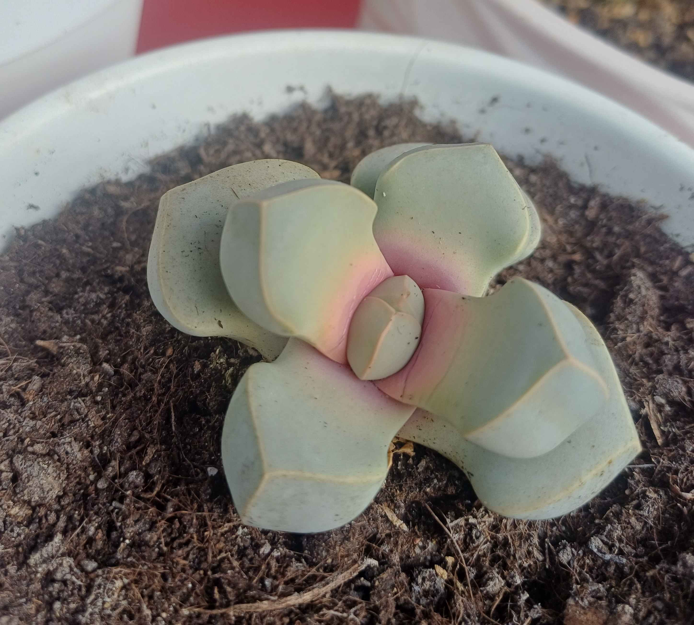

Nazwa zwyczajowa: róża Karoo / perłowa roślina
Rodzina: Aizoaceae
🌠Występowanie
Naturalnie występuje w południowej Afryce – głównie w Namibii i Prowincji Przylądkowej Północnej (RPA), na wysokościach 660–1100 m n.p.m. Rośnie na białych równinach kwarcowych, w szczelinach skalnych i na czerwonym piasku.
🌱 Opis morfologiczny
- Kształt: niska roślina tworząca rozety z 2–4 par mięsistych liści
- Wysokość: do 10–15 cm
- Liście: grube, owalne, szaro-zielone z woskowym nalotem
- Powierzchnia liÅ›ci: gÅ‚adka, kamienista – przypomina inne â€Å¼ywe kamienie†(np. Lithops)
- Pokrój: z czasem tworzy kępy do 3 rozet
🌸 Kwiaty
- Kolor: żółty
- Kształt: przypominający stokrotkę; do 5 cm średnicy
- Okres kwitnienia: późna jesień lub wczesna zima; kwiaty otwierają się w dzień
- Cechy: pojedynczy kwiat może dominować nad całą rośliną; zawiera do 100 płatków i 300–500 pręcików
💠Owoce i rozmnażanie
- Owoce: drobne torebki nasienne
- Rozmnażanie: przez nasiona; możliwe także przez sadzonki liściowe (po wcześniejszym zaschnięciu rany)
🌠Wymagania uprawowe
- Światło: pełne słońce przez cały rok
- Podłoże: bardzo dobrze przepuszczalne; mieszanka dla sukulentów z dodatkiem piasku lub perlitu
- Wilgotność: bardzo niska; podlewać umiarkowanie wiosną i jesienią, zimą ograniczyć lub przerwać
- Temperatura: odporna na przymrozki do –4°C; latem roślina przechodzi w stan spoczynku
🆠Ciekawostki
Lapidaria margaretae to jedyny gatunek w swoim rodzaju – monotypowy. Często mylona z Lithops, Dinteranthus i Schwantesia. Ceniona przez kolekcjonerów za geometryczny pokrój i efektowny kwiat. Idealna do uprawy w skalniakach i ogrodach kserotermicznych.
📷 Zdjęcia z prywatnej kolekcji
Prezentowane poniżej fotografie pochodzą z prywatnych zbiorów...
